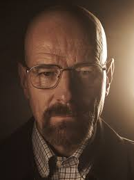

Walter White
Profesor de química convertido en productor de metanfetamina. Su transformación en "Heisenberg" lo convierte en uno de los personajes más icónicos de la televisión.
Jesse Pinkman

Exalumno de Walter White. Al inicio era un joven problemático, pero a lo largo de la serie muestra una gran evolución emocional.
Saul Goodman

Abogado carismático y astuto, siempre con un plan bajo la manga. Tan popular que obtuvo su propia serie.